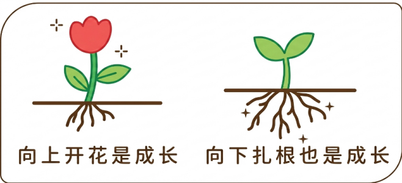

2026年北京市中考道德与法治真题 · 选择题 第11、12、13、14、15题
11. 2026年5月25日，神舟二十三号航天员乘组顺利进驻中国空间站。中国空间站首次迎来________，这是“一国两制”成功实践的生动例证，生动彰显“一国两制”的显著制度优势和强大生命力。（ ）
A. 来自香港的航天员B. 航天员“太空会师”
C. 太空授课D. 与货运飞船对接
12. 同学们制作了心语卡。下列对这张卡片的寓意理解最恰当的是（ ）

A. 展示优势与特长，只追求外在美
B. 以自我利益为中心，不断增强自控力
C. 学会欣赏他人，照搬他人经验
D. 不断努力，做更好的自己
13. 临近毕业，回想初中生活，很多人在“我”生命中留下“痕迹”。
◇好朋友在纸上留下的讲解笔记；同学录上写下的未来约定…… ◇妈妈教会我做的第一道菜；爸爸在成长仪式上写给我的鼓励话语…… ◇老师推荐给我的一本本书；班主任在我迷茫时的一句句点拨…… |
这些“痕迹”共同指引“我”（ ）
①教书育人，恪尽职守 ②珍视情谊，健康成长
③心怀感恩，传递美好 ④尊重师长，言听计从
A. ①②B. ①④C. ②③D. ③④
14. “真正的强者不是一直赢，而是在失败中不倒下，在风雨中找到前行的路。”这句话告诉我们（ ）
A. 防患于未然，远离不良行为
B. 学会自立自强，拒绝接受他人的帮助
C. 时刻保持乐观，杜绝负面情绪
D. 学会面对逆境，将挫折转化为成长的助力
15. 餐厅老板发现一位连续多年几乎每天都点外卖的顾客，多日没有下单。虽素未谋面，但出于担心，希望联系对方确认平安。这位顾客得知这份来自陌生人的挂念时，感动不已。餐厅老板的行为体现了（ ）
A. 真诚待人，珍惜诚信记录
B. 坚守原则，捍卫公平正义
C. 心存善意，主动关心他人
D. 依法求助，维护合法权益